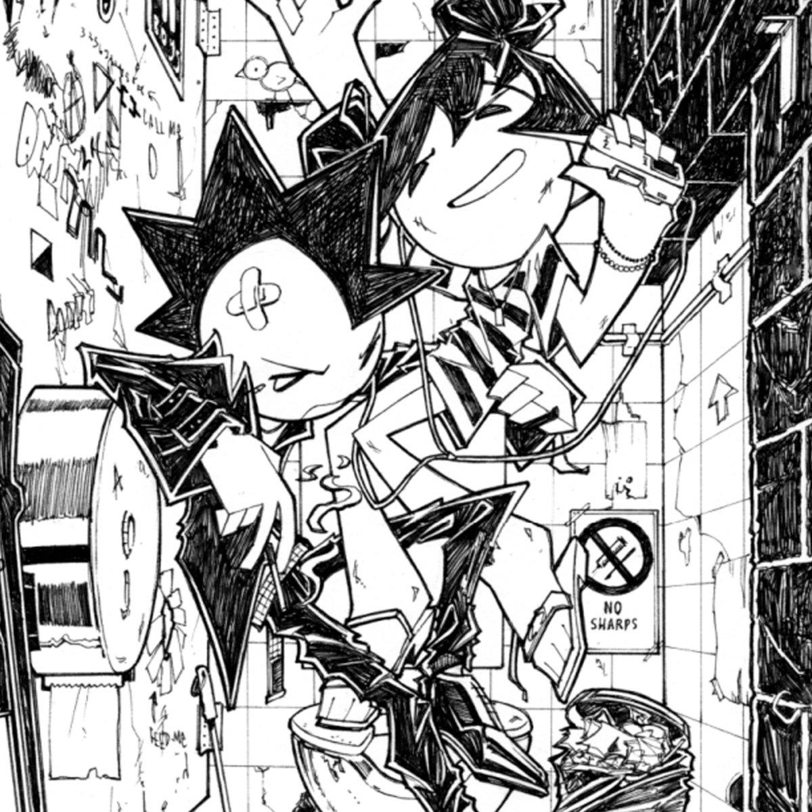

Fell in Love With a Girl
| Published On | November 19, 2024 |
|---|---|
| Cover of | Fell in Love With a Girl - The White Stripes |
Lyrics
Fell in love with a girl
I fell in love once and almost completely
She's in love with the world
But sometimes, these feelings can be so misleading
She turns and says, "Are you alright?"
I said, "I must be fine 'cause my heart's still beating"
"Come and kiss me by the riverside, yeah
Bobby says it's fine, he don't consider it cheating, now"
Red hair with a curl
Mello-Roll for the flavor, and the eyes were peeping
Can't keep away from the girl
These two sides of my brain need to have a meeting
Can't think of anything to do, yeah
My left brain knows that all love is fleeting
She's just looking for something new, yeah
I said it once before, but it bears repeating now
Ah, ah
Ah, ah
Ah, ah
Ah, ah
Can't think of anything to do, yeah
My left brain knows that all love is fleeting
She's just looking for something new
Well, I said it once before, but it bears repeating now
Fell in love with a girl
I fell in love once and almost completely
She's in love with the world
But sometimes, these feelings can be so misleading
She turns and says, "Are you alright?"
I said, "I must be fine because my heart's still beating"
"Come and kiss me by the riverside, yeah
Bobby says it's fine he don't consider it cheating, now"
Ah, ah
Ah, ah
Ah, ah
Ah, ah
Can't think of anything to do, yeah
My left brain knows that all love is fleeting
She's just looking for something new
Well, I said it once before, but it bears repeating now